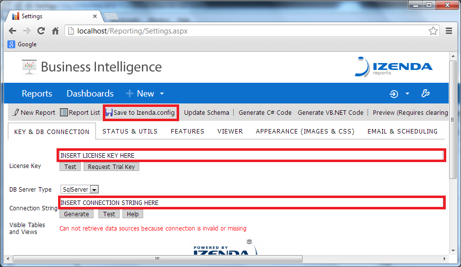

Step 1. Click here to request a license key when you are ready to start your 14 day downloadable trial. If you need the OData, VB, or MVCRazor version of Izenda Reports, note this in the email, otherwise proceed and download the default C# Izenda Reports below.
Step 2. Download the default C# version of Izenda Reports.
By downloading software of Izenda, LLC from this site, you agree to the End User License Agreement (EULA) If you do not agree with such terms and conditions do not download the software.
If you do not recieve your License Key within 24 hours, please check your SPAM box or contact sales@izenda.com
Izenda Reports Quick Setup
To start using Izenda Reports Starting Kit you should take a few simple steps. If you need more information about setup process, configuring reports, additional features or special cases please visit our Knowledge Base.
- Step 1. Download Starter Kit and unzip the contents
- Step 2. Configure website under IIS
- Step 3. Set license key and database connection
- Step 4. Start using Izenda Reports
- Step 5. Preview and Save report
- Troubleshooting Tip
- How to Install Izenda on Windows 2008 with IIS 7
- Full Integration Guide
Step 1. Download Starter Kit and unzip the contents
- Unzip Reporting.zip into a directory. Once unzipped, copy this directory to C:\inetpub\wwwroot, or wherever your websites are located.
- Once this directory is in your C: Drive, name it Reporting, i.e. C:\inetpub\wwwroot\Reporting
Step 2. Configure website under IIS
If you don't have IIS, please see following:
- To access IIS Manager (click Start > Control Panel > Administrative Tools > Internet Information Services (IIS) Manager) and add new application or virtual directory under Default Web Site.
- Select Internet Information Services (IIS) Manager, and open the application.
- Within Internet Information Services Manager add a new application or virtual directory under Default Web Site. Select drop down arrows, until you see the Default Web Site
- Right-click on Default Web Site, and select Add Application. Fill out the Alias text box, and name it Reporting or whatever name you can remember. Once named, select the Select button on the right. Once the drop-down menu appears, select Classic.NET AppPool and OK.

- Create and choose Physical Path to the \Reporting folder and give website a name.
Select the button with 3 dots (...), and it will allow you to browse for a folder to place the application. Select your C: drive and the Reporting folder
- Before continuing, make sure the site folder (...\Reporting) has read permissions for NETWORK SERVICE user. Make sure the reports folder (...\Reporting\Reports) and Izenda.config (...\Reporting\Izenda.config) have write permissions for NETWORK SERVICE user (Right click on MySite\Reporting folder => Properties => Security => Edit... => Add... => Type "NETWORK SERVICE" and press OK => Click 'NETWORK SERVICE' Click 'Allow - Full Control' Click OK=> Click OK).
Step 3. Set license key and database connection
Open the website that you just created http://localhost/reporting. You will be redirected to the Settings page.
Go to the Database tab and fill License Key and Connection String fields with real data. You should receive your trial
License Key via email.If you have not received a key please contact your account manager with Izenda or
sales@izenda.com.

Step 4. Start using Izenda Reports
Now you are ready to start taking advantage of the opportunities in Izenda's self-service reporting platform.
Open http://localhost/Reporting/ReportDesigner.aspx and create your first report easily!
Select your datasources at the first tab ('Data Sources'). Then go to the 'Fields' tab and select the fields
you want to use in the report. There are various options and settings like filters, operators, functions etc.
Make sure to check it all out, but for your first report just selecting several fields will be enough.
For more information about report designer features please visit our
Knowledge Base.
Step 5. Preview and Save report
After you select all data you want to see in report, click Preview and see the results immediately.
Click Save at the tool bar to save your first report report. Categories can be created in the save
menu to group reports. Categories self delete when depopulated (empty).
Troubleshooting Tip
If you encounter any unexpected behaviors or exceptions, simply perform an IISReset, or a refresh of the
individual Izenda site. To achieve this, Click 'START'; type 'cmd' into your search dialogue, right click
the program and choose 'Run as Administrator'. In the command prompt type 'iisreset' and hit enter. Be sure
to refresh your browser and empty cache to ensure you see updated pages.
How to Install Izenda on Windows 2008 with IIS 7
This video demonstrates a simple install process for Izenda on Windows Server 2008 with IIS 7, connecting to
SQL Server 2008 R2.
Full Integration Guide
If you have not yet installed Izenda on IIS, please watch the install videos for Windows 2003 or Windows 2008.